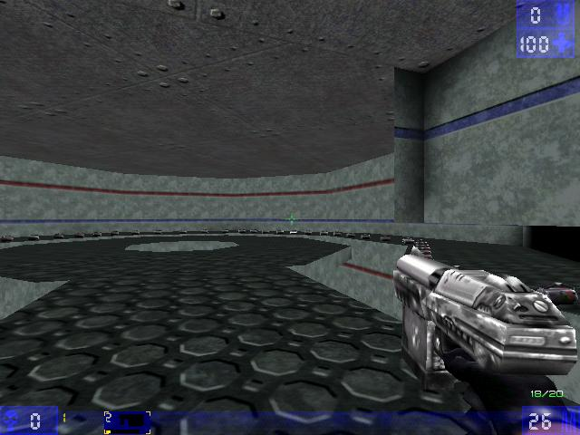

Craze
I am craze. I AM STILL ALIVE exept...
i forgot my password, i changed IPS's so i now have a different email so now i cant ever login again because nobody will believe its me heh...
I am a map maker for UnWheel mod 2004(W0000t, im banned now  )
)
I am trying to script some stuff and write a bug fix exept ued never saves myt code so 6 hours of work are now gone 
still alive...
working on a nice big UT project with some other people 
search has died! and now its been fixed, yeay.
still alive, dont do much of anything but read stuff anymore, just sayin' im still alive and usin' teh wiki, teh wiki is teh PWN, thats all for now...

one of my grand but odd levels. very large. |
As you can see it's sorta odd.
The pug fugly skaarj that I made.
Please fix this:
//will put code here when I need to.=====] H [===== ======] E [====== =======]L[======= ======] L [====== =====] O [===== ====] [==== =====] I [===== ======] [====== =======]A[======= ======] M [====== =====] [===== ====] C [==== =====] R [===== ======] A [====== =======]Z[======= ======] E [====== =====] , [===== ====] [==== =====] A [===== ======] L [====== =======]L[======= ======] [====== =====] H [===== ====] A [==== =====] I [===== ======] L [====== =======] [======= ======] C [====== =====] R [===== ====] A [==== =====] Z [===== ======] E [====== =======]